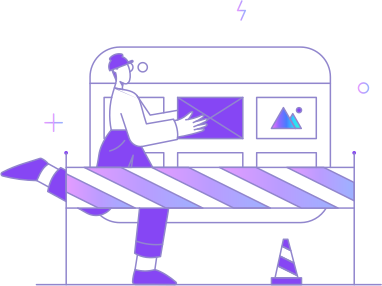

Error Page
- Home
- / Error Page

Oops! Page Not Found.
The page you are looking for is not available or has been moved. Try a different page or go to homepage with the button below.
Go To HomeThe page you are looking for is not available or has been moved. Try a different page or go to homepage with the button below.
Go To Home